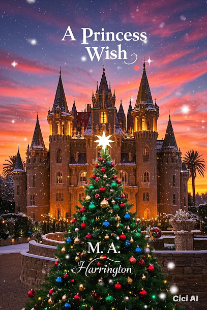
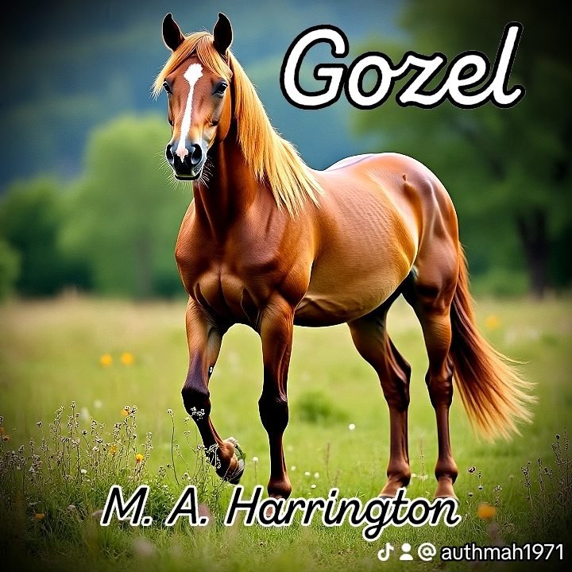

Every story has a world of its own
Meet My Literary Children
Each story begins with an idea and grows into
something of its own. Meet the characters, explore
their worlds, and decide where your imagination
will take you.
My collection will continue to grow as new stories
are completed and added.

Perfect Fit
Sometimes the connections that change our lives
are the ones we never expected.
A heartfelt story exploring love, understanding,
empathy, and the unexpected connections that
bring people together. Discover what can happen
when people look beyond assumptions and allow
themselves to see one another differently.

A Princess Wish
One shooting star. One heartfelt wish.
One Christmas that changes everything.
In a beautiful kingdom in Nigeria, Princess
Rosalina has everything a princess could wish
for—except someone who will love her for who
she truly is.
With her loyal best friend Wendy by her side,
Rosalina discovers that true love means much
more than crowns and riches. It means kindness,
generosity, patience, and finding people with
whom you can share your heart.
Filled with Christmas magic, Nigerian traditions,
laughter, and a joyful celebration, this is a
heartwarming fairy tale for children and families
to enjoy together.

Gozel
A remarkable horse. Unexpected connections.
A future worth protecting.
In Turkmenistan, Zara and her magnificent
Akhal-Teke stallion, Gozel, share a bond built
on trust and loyalty. Their journey brings
unexpected opportunities, difficult choices,
and a connection that reaches far beyond
the competition arena.
Beneath the romance lies another important
story: the freedom of a remarkable horse and
the effort to protect the habitat and future
of the Akhal-Teke breed.
Gozel is a story about love, compassion,
responsibility, and protecting what matters
for generations to come.

Thirty Seconds
Thirty seconds can change everything.
One journey. One devastating moment. And a
reminder that life can change in the blink
of an eye.
This moving story explores family, lost time,
second chances, and the people who matter most.
Sometimes we become so focused on building a
better future that we forget to cherish the
people waiting for us in the present.
It is an invitation to reflect on love,
opportunity, and the precious time we have
with the people who matter.